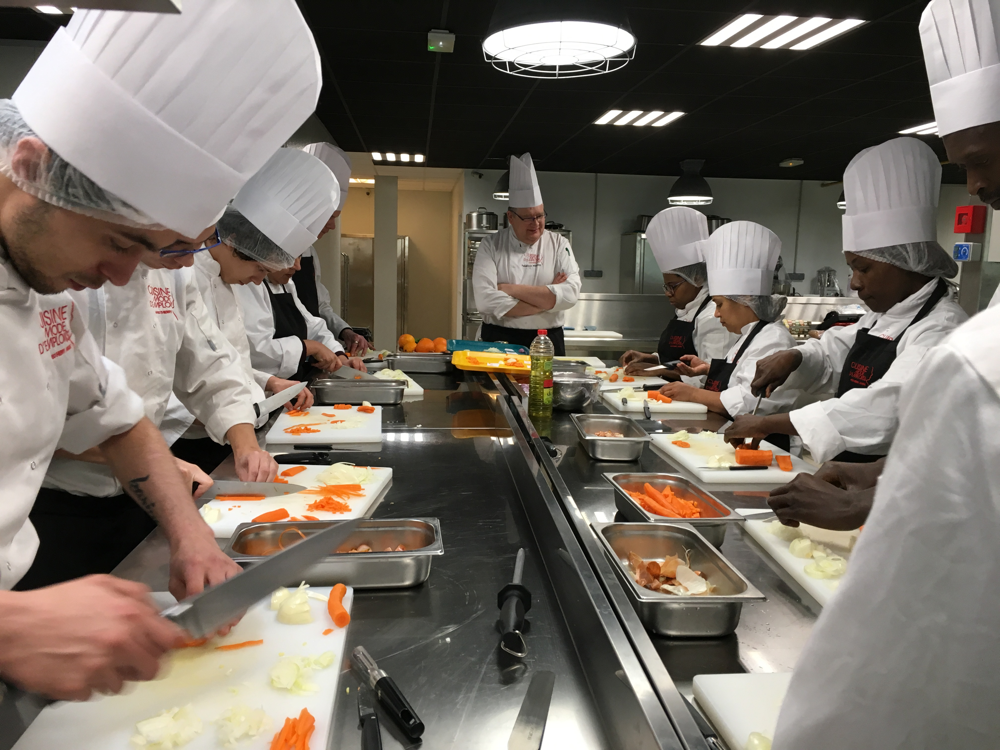

La préparation du repas va se faire en 7 groupes constitués chacun de deux personnes : un français et son correspondant hollandais.
Chaque groupe aura une recette à réaliser. Les recettes sont les suivantes :
Les groupes travailleront en parallèle pour préparer le repas. Attention les groupes 4 et 5 auront besoin au milieu de leur préparation des pâtes et appareils à quiche préparés par les groupes 2 et 3.